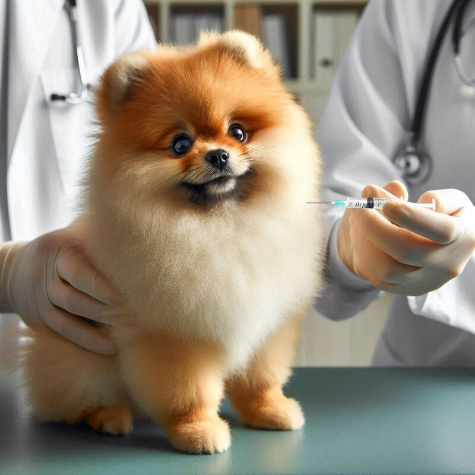
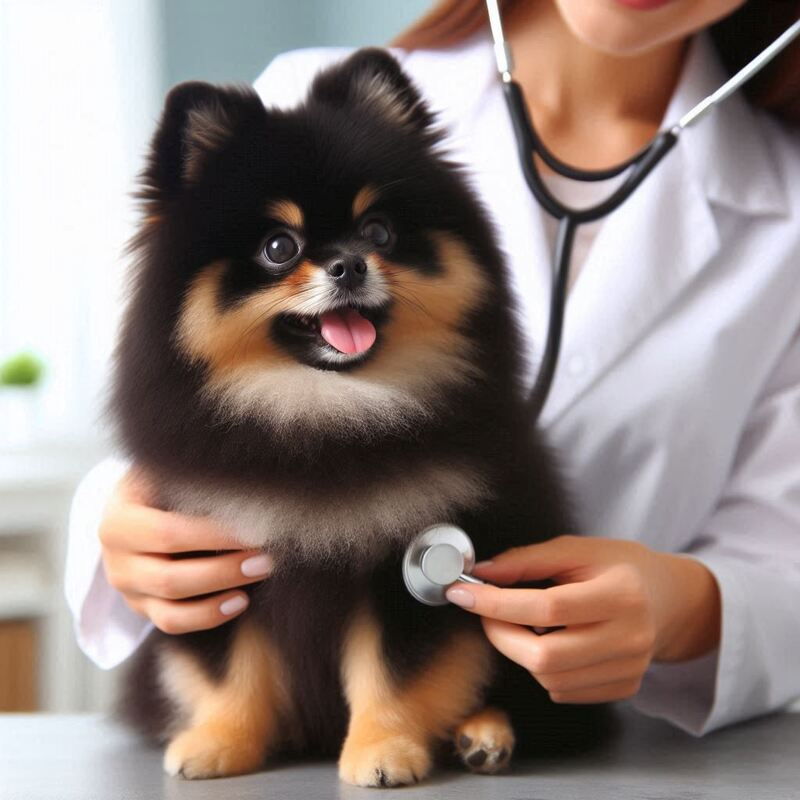
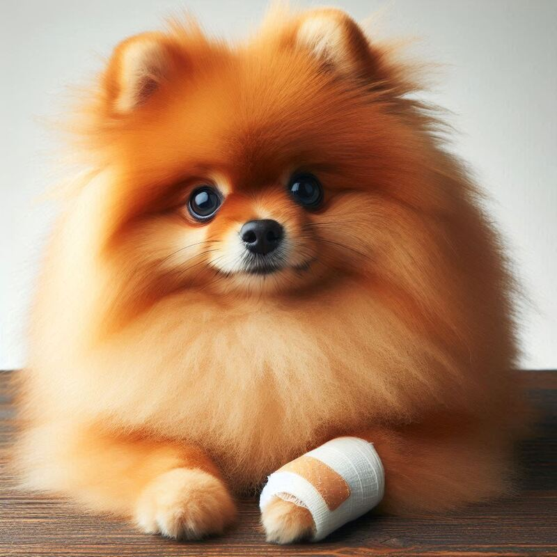

Vaccinations and vet visits
Vaccinations and regular veterinary visits are essential for maintaining the health and well-being of a new dog. Begin by scheduling an initial veterinary appointment to establish a baseline health assessment and discuss vaccination requirements. Core vaccinations, such as those for rabies, distemper, parvovirus, and adenovirus, are vital to protect against serious and potentially life-threatening diseases. Your veterinarian will create a vaccination schedule tailored to your dog's age, health status, and lifestyle, ensuring they receive necessary booster shots to maintain immunity. Annual wellness exams allow veterinarians to monitor your dog's overall health, detect early signs of illness, and provide preventive care such as parasite control and dental exams. Regular visits also offer opportunities to discuss nutrition, behavior, and any concerns you may have about your dog's well-being. By staying proactive with vaccinations and veterinary care, you can help your new dog live a long, healthy, and happy life as part of your family.


Preventative care
Preventative health care for Pomeranians is crucial to maintaining their well-being and longevity. Start with regular veterinary check-ups, ideally twice a year, to monitor their overall health, detect early signs of illness, and update vaccinations. Implement a balanced diet appropriate for their age, size, and activity level to support optimal nutrition and prevent obesity, which can exacerbate various health issues. Dental care is essential; brush their teeth regularly and provide dental chews or treats to prevent dental disease and maintain oral health. Protect against parasites such as fleas, ticks, and heartworms with preventive medications recommended by your veterinarian. Regular exercise tailored to their size and energy levels promotes physical fitness and mental stimulation, reducing the risk of obesity and behavioral problems. Monitor their skin and coat for signs of allergies or infections, and promptly address any abnormalities. By prioritizing preventative measures and maintaining a consistent health care regimen, you can help ensure your Pomeranian enjoys a healthy, active, and happy life.
First aid and emergency care
First aid and emergency care knowledge are essential for every dog owner to handle unexpected situations effectively. Start by assembling a pet first aid kit containing items such as gauze pads, adhesive tape, antiseptic wipes, a digital thermometer, and tweezers for removing splinters or ticks. Learn how to perform basic first aid procedures like bandaging wounds, controlling bleeding, and administering CPR if necessary. Familiarize yourself with common signs of distress or illness in dogs, such as difficulty breathing, excessive bleeding, or sudden collapse. Keep emergency contact numbers for your veterinarian, an emergency veterinary clinic, and a poison control hotline readily accessible. In case of poisoning, have information on hand regarding substances toxic to dogs and steps to take immediately. Remain calm and assess the situation carefully, prioritizing safety for both you and your dog. Attend pet first aid and CPR classes to gain hands-on training and confidence in handling emergencies. Being prepared and proactive can make a critical difference in providing timely and effective care during emergencies for your beloved companion.

Age-specific care (puppy, adult, senior)
Puppy (0-1 year):
During the puppy stage, focus on establishing a foundation for lifelong health. Schedule regular veterinary visits for vaccinations, deworming, and health checks to monitor growth and development. Provide a balanced puppy-specific diet rich in nutrients for proper bone and muscle growth. Begin socialization early, exposing your puppy to various people, animals, and environments to promote confidence and reduce fear. Start basic training for obedience and house manners, using positive reinforcement methods. Keep up with dental care by introducing tooth brushing and dental chews to prevent plaque buildup. Monitor their energy levels and play safely to avoid overexertion or injury.
Adult (1-7 years):
In adulthood, maintain regular annual veterinary check-ups to assess overall health and detect any early signs of disease. Adjust their diet to meet their nutritional needs based on activity level, weight management, and any health concerns. Engage in daily exercise routines to keep them mentally and physically stimulated, adjusting intensity based on breed and individual preferences. Continue dental care with regular brushing and professional cleanings as recommended. Stay vigilant for signs of joint problems, obesity, or allergies, adjusting their care regimen accordingly. Provide mental stimulation through interactive toys, puzzles, and training sessions to keep their minds sharp and prevent boredom. Monitor their weight and adjust feeding portions as needed to prevent obesity, a common issue in adult dogs.
Senior (7+ years):
In their senior years, focus on maintaining comfort, mobility, and quality of life. Increase the frequency of veterinary visits to twice a year for comprehensive exams and screenings for age-related conditions such as arthritis, kidney disease, or cognitive decline. Adjust their diet to support aging joints and digestion, opting for senior-specific formulas or supplements like glucosamine and omega-3 fatty acids. Provide gentle exercise routines to keep them active without overexertion, incorporating shorter walks and low-impact activities. Monitor their dental health closely and address any dental issues promptly to prevent pain or infection. Ensure a safe and comfortable environment with easy access to water, food, and bedding. Offer mental stimulation through interactive games and enrichment activities to keep their minds engaged. Regularly groom and inspect their coat, skin, and nails for any changes or abnormalities.
Pet insurance
Pet insurance provides financial support for veterinary care, helping offset the cost of unexpected illnesses, accidents, and routine check-ups for your pet. It typically covers treatments such as surgeries, medications, diagnostic tests, and sometimes even preventive care like vaccinations and dental cleanings. Pet insurance plans vary in coverage options, deductibles, and premiums, so it's essential to compare plans to find one that suits your pet's needs and your budget.
- Healthy Paws Pet Insurance & Foundation: Known for comprehensive coverage and fast claim processing.
- Trupanion: Offers customizable plans with no payout limits per condition.
- Nationwide Pet Insurance (formerly VPI): Provides plans covering accidents, illnesses, and wellness care.
- Petplan: Offers extensive coverage for hereditary and chronic conditions.
- Embrace Pet Insurance: Includes coverage for breed-specific conditions and alternative therapies.
Before choosing a pet insurance provider, consider factors such as coverage limits, reimbursement percentages, waiting periods for coverage to start, and any exclusions or pre-existing conditions clauses. Review customer reviews and ratings to gauge customer satisfaction and claims processing efficiency. Pet insurance can provide peace of mind knowing you can afford necessary veterinary care without financial strain, making it a valuable consideration for responsible pet ownership.